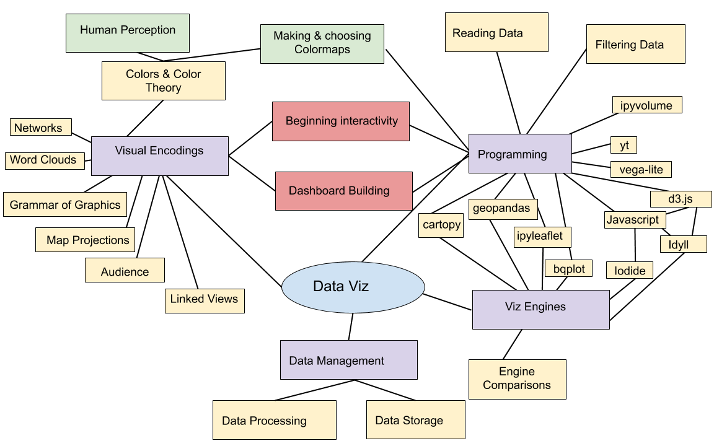

notes: last time we got a bunch of bureaucratic stuff (mostly) out of the way…
make sure all notebooks are open now!! they take a while to load in the class wifi!
notes: now, lets actually discuss some viz stuff!
notes: there is a huge overlay of topics that cover data viz - from the neurology of how your prefrontal cortex process information, to how humans process storytelling, to data analytics, and color theory and the list goes on!

notes: this is another way of looking at this.
here is the overall diagram of the things we’ll cover in this class – you can see there are a lot of topics from different areas and they are all interconnected.

notes: We’re going to start out at a very high-level, discussing why we choose to visualize versus other types of representation, what types of data, and how we might do it.
“Computer-based visualization systems provide visual representations of datasets designed to help people carry out tasks more effectively.”
notes: I really like this definition because it gives us a sense of purpose - i.e. that our visualization must help a human with a task that has to do with data.
“Computer-based visualization systems provide visual representations of datasets designed to help people carry out tasks more effectively.”
Data Viz is task oriented:

notes: here for example, we might want to know the labels of bones or how they fit together
“Computer-based visualization systems provide visual representations of datasets designed to help people carry out tasks more effectively.”
… versus artistic representations used to convey emotions:

“Computer-based visualization systems provide visual representations of datasets designed to help people carry out tasks more effectively.”
… versus movies, comics, or other cinematic representations used to tell stories:

notes: we will be using artistic concepts and elements of storytelling, BUT that is not our focus – here we are TASK oriented.
(Or rather, why wouldn’t we visualize?)
notes: Not everything suits itself to visualization – and part of the reason for that is the necessary reductionism that visualization can require.
Peg + Cat: https://www.youtube.com/embed/In72QAQJ1tY?rel=0
notes: “There are lots of thing you can compare on a graph / Like who is the shortest or the tallest giraffe / You can chart how much you walk / How much that you laugh / There are lots of things you can compare on a graph”
“But the one thing you can’t chart / Is how you feel in your heart”
Peg + Cat: https://www.youtube.com/embed/In72QAQJ1tY?rel=0

“There are lots of thing you can compare on a graph / Like who is the shortest or the tallest giraffe…”
notes: “There are lots of thing you can compare on a graph / Like who is the shortest or the tallest giraffe / You can chart how much you walk / How much that you laugh / There are lots of things you can compare on a graph”
“But the one thing you can’t chart / Is how you feel in your heart”
Peg + Cat: https://www.youtube.com/embed/In72QAQJ1tY?rel=0

“But the one thing you can’t chart / Is how you feel in your heart”
notes: “There are lots of thing you can compare on a graph / Like who is the shortest or the tallest giraffe / You can chart how much you walk / How much that you laugh / There are lots of things you can compare on a graph”
“But the one thing you can’t chart / Is how you feel in your heart”

notes: for example, here is a haptic, or touch based “visualization” for the blind & visually impaired
notes: you should check it out, because its a thing we are also not going to cover!
notes: Visual information is communicated through our eyes, where it is processed. At the most basic level, we can see a range of about 210 degrees horizontally with one or both eyes. The region that is covered by both (“binocular”) is about 114 degrees in extent.
You can only cram so much information into the human eye.

By Vanessa Ezekowitz CC BY-SA 3.0, via Wikimedia Commons
notes: When we think about visual communication of information, we must think about how human physiology interacts with that communication.
Also, fair warning: I’m not a medical doctor.
This diagram shows the visual acuity of a “standard” human eye, as a function of angular distance from the fovea. We have to think about this in conjunction with our field of view.
There are 12 dots, can you count them all at the same time?
(You should bring up the slides yourself to see these optical illusions)

Step 1: Look at the cross
Step 2: Close left eye, keep looking at the cross
Step 3: Slowly move your head toward & away from screen until dot disappears
(You should bring up the slides yourself to see these optical illusions)
notes: this only works if you have these slides on your own computer (but I can put this up over break if you want to test it on the screen!)
Step 1: Look at the cross
Step 2: Close left eye, keep looking at the cross
Step 3: Slowly move your head toward & away from screen until dot disappears
Your visual cortex is processing information from different parts of this page AT THE SAME TIME which means it can do impressive things very quickly.
Can you spot the differences?

notes: compare this to how long it would take to spot differences in 2 songs - you’d have to listen to both songs (probably more than once) and compare after! This would be sequential rather than parallel data transfer!
Try doing the same thing with these on your own!
notes: time this activity, give them 1.5 minutes
ask: how long did this take you? How many differences were there? I spotted tempo as one (but you can cheat by looking at the timer on the bottom!)
Also, you can look at how different each of the sound-bars are on each link and see how different the music looks visually!
notes: (This part is a bit of a stunt. Sorry.)
Read these numbers:
| 2007-01-01 | 14233.2 |
| 2007-04-01 | 14422.3 |
| 2007-07-01 | 14569.7 |
| 2007-10-01 | 14685.3 |
| 2008-01-01 | 14668.4 |
| 2008-04-01 | 14813.0 |
| 2008-07-01 | 14843.0 |
| 2008-10-01 | 14549.9 |
| 2009-01-01 | 14383.9 |
notes: See what I mean? It’s a stunt. You’re supposed to hear these, or look at the numbers, and not have as clear an impression. It also takes a lot longer.
Can you read the trends here at all?

notes: You might immediately notice a few things about this image, but one item that we will talk about as class goes on is that often visualizations can have a consistent style. FRED in particular has a “branding” that is quite obvious, even without the logo.
Also, the data we read was in the last sort of gray area of this graph.
This famous example show’s 4 datasets with the exact same mean, varience and correlation coefficient.

Statistics can be useful, but visualization generated context!

Statistics can be useful, but visualization generated context!
notes: Whenever you build a visualization you need to think about the context that you can assume on the part of your viewer.
We will talk about how your viz changes with audience in this course.
“Visualizing data” is not a strict subset of “making an image.”
notes: We will approach visualization as encompassing several different stages in the collection, organization and representation of data.
We tell lies to visualize, but we must be honest. (Stuart Levy, AVL)

notes: So let’s first talk about how misleading visualizations can be. This 3D pie chart violates the “principle of proportional ink” which states that the number of pixels that represent a value should be proportional to the value. With the raised edge on the pie chart, the blue wedge gets way more ink than it deserves and you get a disproportionate sense of value.

notes: you can have a lot of absurd fun with data - but when data is presented in a visualization, people often believe the authority of it even if it’s outlandish.
This guy has some good ideas of where to find sample datasets for upcoming homework assignments too!
notes: Each of these bar chart examples are meant to show the same data. But you can see how they’re a bit problematic.
notes: Now here’s an example that’s more brazen. I’ll give you a minute to analyze this and tell me what’s wrong with this graph.
Some people will claim the Y-axis should always start from the bottom - at zero - to avoid confusion.
notes: however, the Keeling Curve is an interesting counter-argument. This is the famous graph that was the original evidence for global warming, showing the rate at which atmospheric carbon dioxide was growing.
Does anyone know why it’s generally accepted to show the y-axis like this, without it starting at the zero axis?
notes: here are a few more representations of data that you’ve probably run into!
notes: what goes into this representation
2 out of 3 “points”

notes: This is a screenshot from the movie “Lilo and Stitch” where the little girl Lilo is graphing how much evil is in the alien Stitch. It borrows from a familiar visual - the thermometer. But how could this visualization be misinterpreted? How is it different from a thermometer?
notes: The angle can be misleading. So can the relative width of the head vs the feet. The surface area is not consistent from top to bottom. Also there are empty areas in the mouth and eyes!
notes: If we rotate the image so that the red liquid is level, do we get a different impression for how much bad is in Stitch?
Our choices must be:
Mark Newman of the University of Michigan has created visualizations of the election maps from several of the most recent elections. For more information and context, see his page http://www-personal.umich.edu/~mejn/election/2008/ .
notes: These are great, but some criticisms might be that the color red is more apparent to the human eye than the color blue. And in the population-to-area adjusted maps, it’s difficult to read for people used to geographic accuracy.
Map1 - this is just a geographical map of red and blue
Map2 - cartogram weighted by population (note, NOT by electoral college population)
Map3 - election results by county
Map4 - percentage of votes by county
Map5 - percentage of votes by county, weighted by population
Let’s check out the Python part of Homework #1!
notes:
if taking a break – fire up notebooks now!!
{kind=link}
{kind=link}
{kind=link}
{kind=link}
{kind=link}